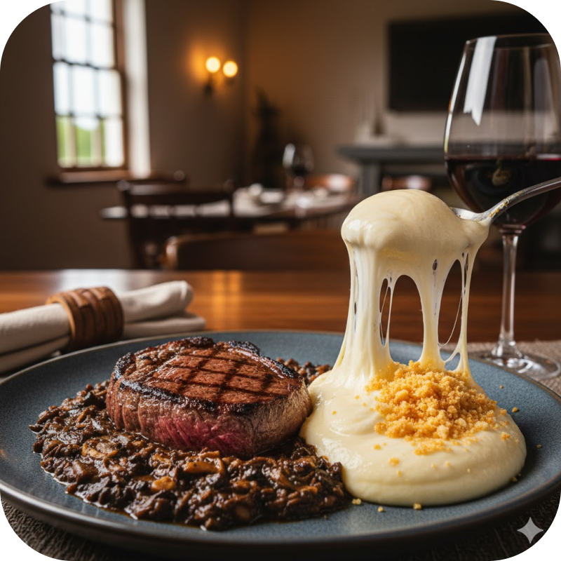
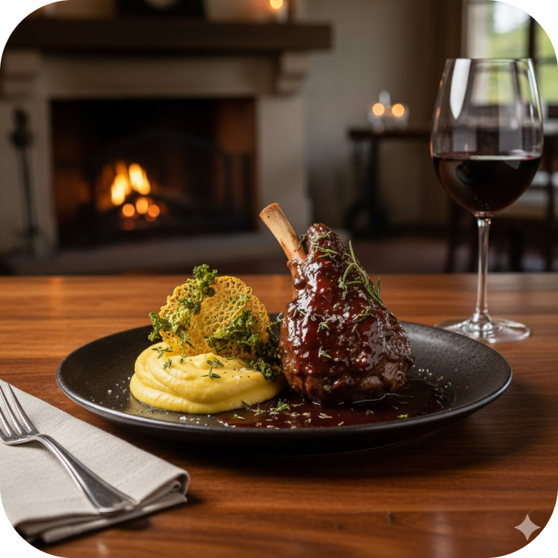
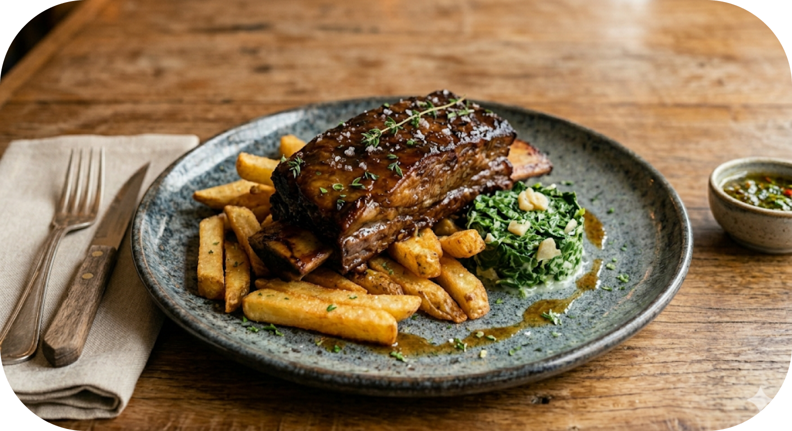
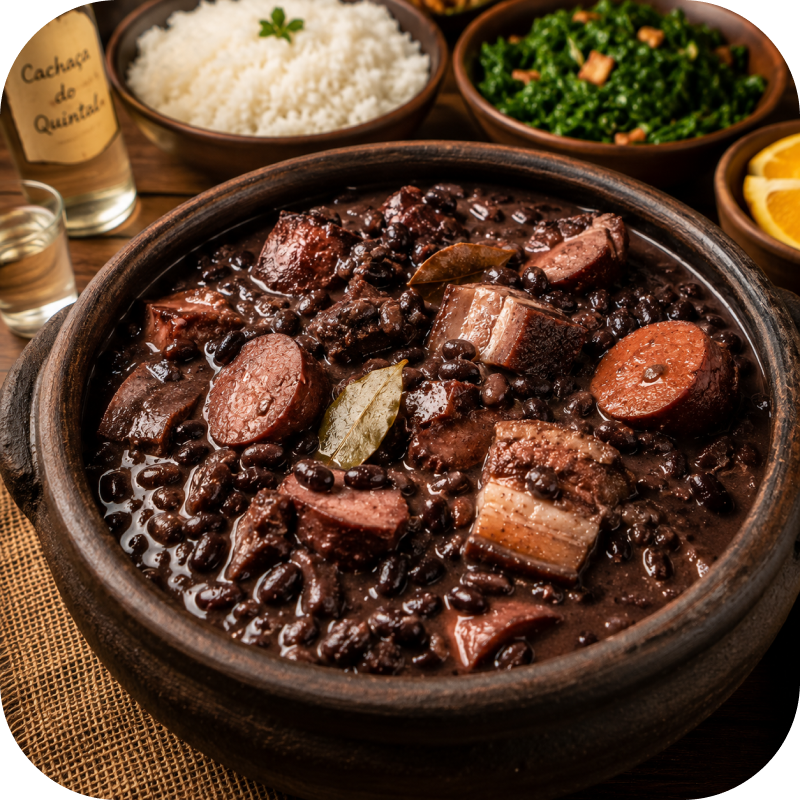
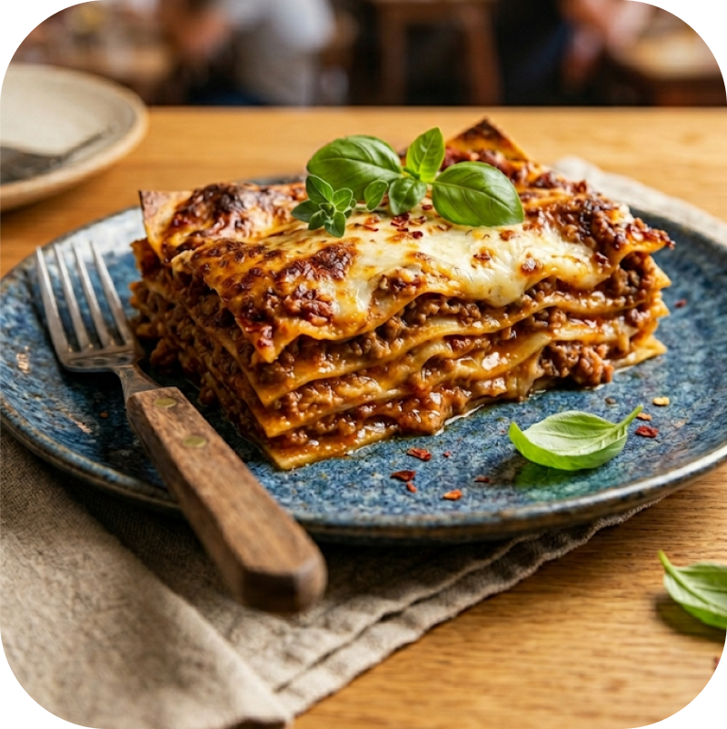

confira o cardápio completo




Desde 1984, o Quintal dos Sabores abre suas portas para quem busca mais do que uma refeição: busca um retorno às origens. Localizado em um refúgio onde o tempo insiste em caminhar devagar, somos um restaurante autenticamente rústico, construído com o calor da madeira de demolição, o frescor das paredes de pedra e a alma do fogo de chão.
